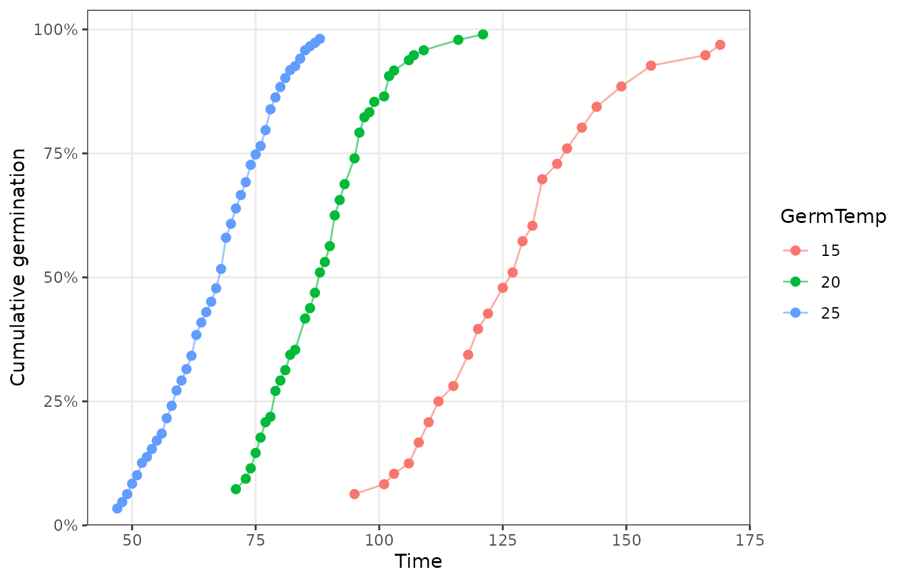
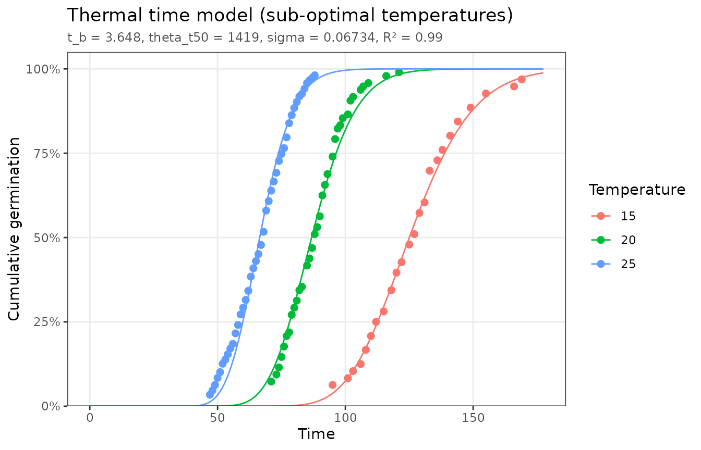
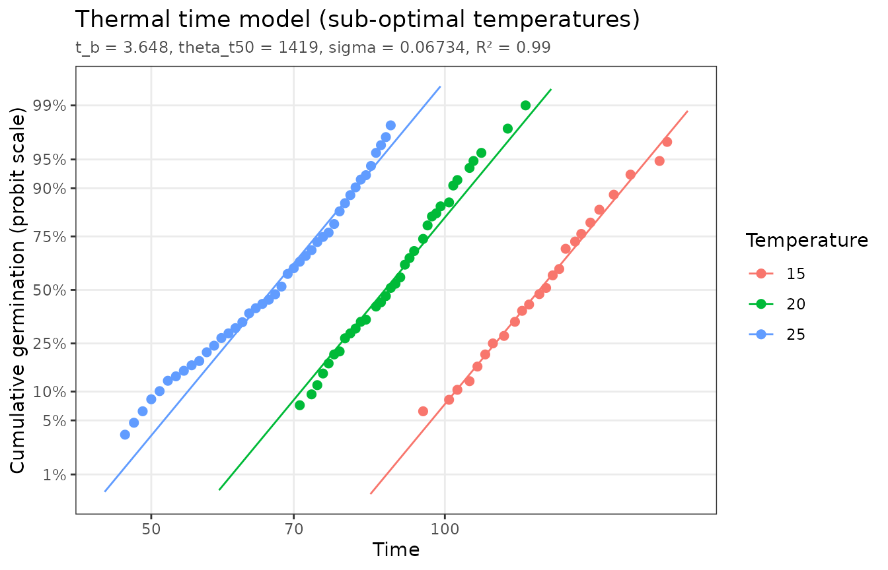
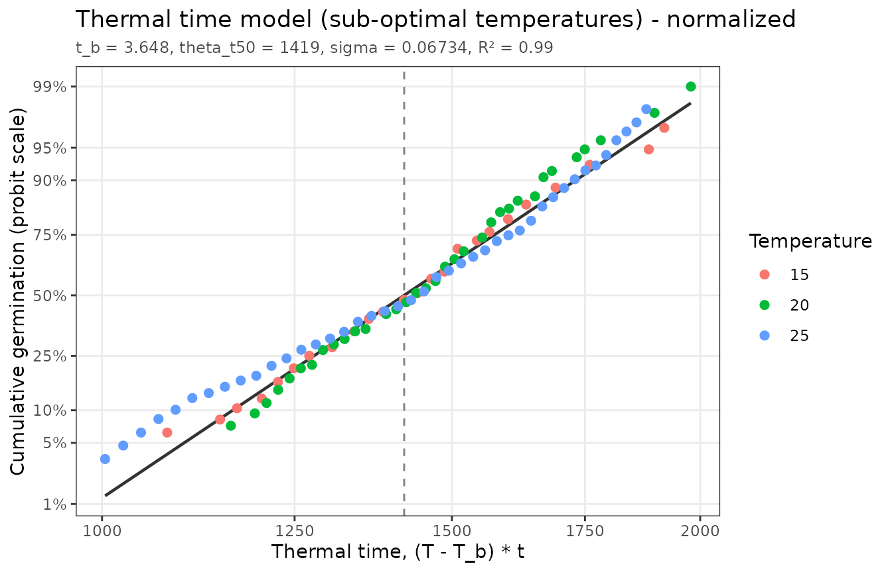

The model
Below the optimum temperature, seeds germinate faster the further the
temperature T exceeds a base temperature T_b,
below which germination does not occur. The thermal time to
germination of fraction g of the population is
constant:
where
is the time to germination of fraction g. Thermal times
vary among seeds, following a log-normal distribution with median
and standard deviation
(on the log10 scale). The fitted model is
where is the standard normal cumulative distribution. The model is fit across all temperatures at once, so only temperatures at or below the optimum should be included.
Data
thermal_time_data has tomato seeds germinated in water
at three temperatures:
head(thermal_time_data)
#> # A tibble: 6 × 5
#> TrtID TrtDesc GermTemp CumTime CumFraction
#> <dbl> <chr> <dbl> <dbl> <dbl>
#> 1 1 Tomato-15C-Water 15 95 0.063
#> 2 1 Tomato-15C-Water 15 101 0.083
#> 3 1 Tomato-15C-Water 15 103 0.104
#> 4 1 Tomato-15C-Water 15 106 0.125
#> 5 1 Tomato-15C-Water 15 108 0.167
#> 6 1 Tomato-15C-Water 15 110 0.208
plot_germ_data(thermal_time_data, color = "GermTemp")
If your data include other treatments (for example several water
potentials), filter to a single level of those first, e.g. with
subset(data, GermWP == 0). Otherwise their effects will be
attributed to temperature.
Fitting
fit <- fit_thermal_time(thermal_time_data)
fit
#> <pbtm_fit> Thermal time model
#>
#> t_b theta_t50 sigma
#> 3.648 1419 0.06734
#>
#> n = 100, pseudo-R2 = 0.9903, AIC = -686.8
summary(fit)
#> Thermal time model
#>
#> Coefficients:
#> estimate std_error fixed
#> t_b 3.648e+00 0.106326 FALSE
#> theta_t50 1.419e+03 9.826013 FALSE
#> sigma 6.734e-02 0.001165 FALSE
#>
#> n = 100, parameters = 3, RSS = 0.09604, AIC = -686.8, pseudo-R2 = 0.9903The estimated base temperature is 3.65 °C, and half of the seeds need 1419 degree-hours above it to germinate.
autoplot(fit)
Linearized plots
Because thermal time is log-normally distributed, the fitted time course at each temperature is a straight line on a log time axis with a probit (normal quantile) fraction axis. These lines are parallel, since every temperature shares the same . Points that curve away from their line show where the model fits poorly.
autoplot(fit, x_scale = "log", y_scale = "probit")
The normalized plot converts every observation to thermal time, , using the estimated base temperature. If the model holds, all temperatures collapse onto one line, the population’s thermal time distribution, and the dashed line marks :
autoplot(fit, type = "normalized")
Using the model
The median time to germination at any sub-optimal temperature follows from the parameters as :
p <- coef(fit)
temps <- c(15, 20, 25)
data.frame(GermTemp = temps, predicted_t50 = p[["theta_t50"]] / (temps - p[["t_b"]]))
#> GermTemp predicted_t50
#> 1 15 125.02588
#> 2 20 86.79584
#> 3 25 66.47065
germ_speed(thermal_time_data, 0.5, groups = "GermTemp")
#> # A tibble: 3 × 4
#> GermTemp Fraction Time GR
#> <dbl> <dbl> <dbl> <dbl>
#> 1 15 0.5 126. 0.00791
#> 2 20 0.5 87.8 0.0114
#> 3 25 0.5 67.6 0.0148predict() gives the full predicted time course for new
conditions:
new <- expand.grid(GermTemp = 12, CumTime = c(100, 150, 200, 250))
cbind(new, CumFraction = predict(fit, new))
#> GermTemp CumTime CumFraction
#> 1 12 100 0.0003132305
#> 2 12 150 0.2104641856
#> 3 12 200 0.8532827480
#> 4 12 250 0.9936092390To explore alternative parameter values, hold some of them fixed:
fit_thermal_time(thermal_time_data, fixed = list(t_b = 5))
#> <pbtm_fit> Thermal time model
#>
#> t_b* theta_t50 sigma
#> 5 1297 0.07013
#> (* held fixed)
#>
#> n = 100, pseudo-R2 = 0.9705, AIC = -581.7References
Bradford, K.J., Bello, P. (2022) Applying population-based threshold models to quantify and improve seed quality attributes. In J Buitink, O Leprince, eds, Advances in Seed Science and Technology for More Sustainable Crop Production. Burleigh Dodds Science Publishing, Cambridge, UK. https://doi.org/10.19103/AS.2022.0105.05